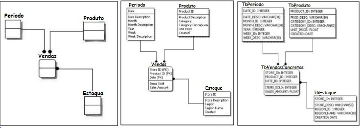

Modelagem de Banco de Dados
A modelagem de banco de dados é o processo de criar uma representação visual de um banco de dados. A modelagem ajuda a definir a estrutura, as relações e as restrições dos dados que serão armazenados em um banco de dados. Existem três níveis de modelagem de banco de dados:
- Modelo conceitual
- Modelo lógico
- Projeto físico
Modelo Conceitual
O modelo conceitual representa o modelo de dados de alto nível, independentemente de um SGBD específico. Ele é uma representação visual dos principais objetos do mundo real que serão armazenados em um banco de dados, juntamente com suas propriedades e relacionamentos. O modelo conceitual é geralmente representado por meio de um diagrama entidade-relacionamento (ER).

Modelo Lógico
O modelo lógico representa o modelo de dados de um SGBD específico. Ele é uma representação dos objetos e relacionamentos do mundo real em termos de tabelas, colunas e chaves primárias e estrangeiras. O modelo lógico é usado para criar as tabelas e relacionamentos do banco de dados e geralmente é representado por meio de um diagrama relacional.

Projeto Físico
O projeto físico é a implementação do modelo lógico em um SGBD específico. Ele inclui a criação das tabelas, índices, restrições e outros elementos necessários para armazenar os dados. O projeto físico também inclui decisões sobre o hardware, o sistema operacional e outros fatores relacionados ao desempenho do banco de dados.
